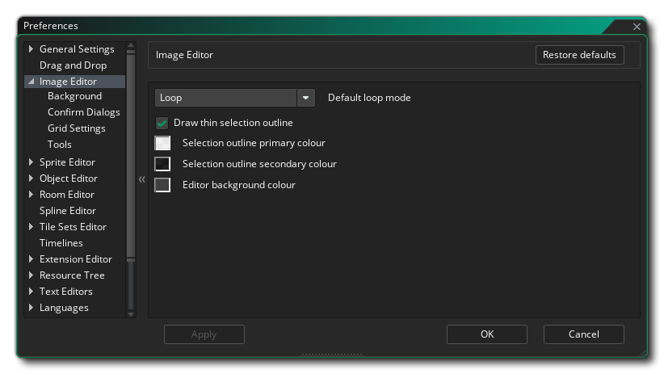
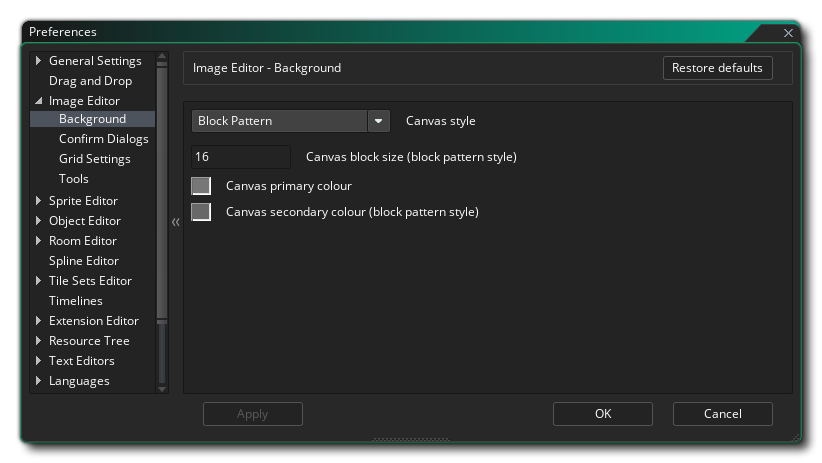
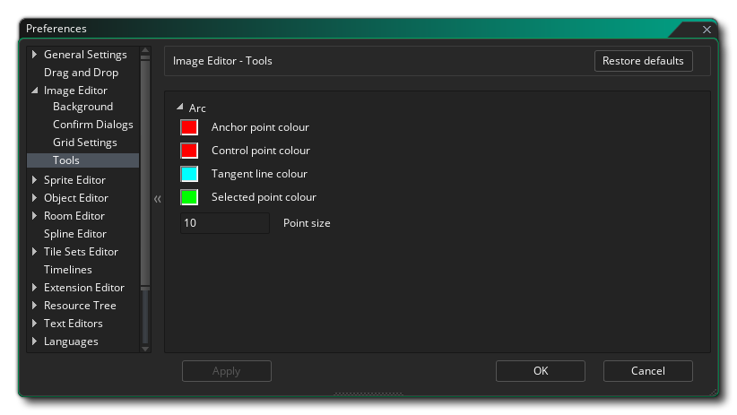

Les préférences de l'éditeur d'image sont utilisées pour définir la façon dont les fenêtres d' image- objet et d' image -objet sont affichées. Voici les options générales:
Les préférences de l'éditeur d'images comportent également les sous-catégories suivantes:
- Mode de boucle par défaut: Le bouton de boucle dans l'éditeur d'image peut être configuré pour fonctionner dans deux modes différents: soit jouer une fois, où l'animation s'arrêtera à la dernière image, boucle à partir du début, où l'animation retournera à la première image quand elle se termine, ou ping pong, où l'animation ira à travers les images à la fin et puis redescendre à travers eux à nouveau au début. La valeur par défaut ici est "loop".
- Dessiner un contour de sélection mince: Si cette case est cochée, le contour des sélections sera d'une largeur absolue de 1px, quelle que soit l'échelle de l'image, tandis que la décochera fera un plan de sélection de 1px de largeur et d'échelle image. La valeur par défaut est d'avoir cette option cochée.
- Couleur primaire du contour de sélection: Le contour de la section est une ligne pointillée qui alterne entre deux couleurs. Cette option vous permet de définir la première de ces couleurs à utiliser (y compris Alpha), et a une valeur par défaut de #FFFFFD0.
- Couleur secondaire du contour de sélection: Le contour de la section est une ligne pointillée qui alterne entre deux couleurs. Cette option vous permet de définir la seconde de ces couleurs à utiliser (y compris alpha), et a une valeur par défaut de #0000D0.
- Couleur d'arrière-plan de l'éditeur: lors de la modification d'une image-objet, l'image peut être agrandie ou déplacée ou ne pas correspondre à l'ensemble du dessin dans la fenêtre. Dans ce cas, une couleur d'arrière-plan s'affiche ici. La valeur par défaut est #282828FF.
Ici, vous pouvez définir les options pour l'arrière-plan que vous modifiez vos images sprite. Par défaut, il s'agit d'une grille de carrés gris, mais vous pouvez utiliser les paramètres suivants pour le modifier:
- Style de la toile - Ici, vous définissez le "style" pour l'arrière-plan, qui peut être soit " Modèle de bloc " ou " Couleur unique ". La couleur unique définit simplement l'arrière-plan à la couleur de votre choix (en utilisant le paramètre Couleur 1, comme expliqué ci-dessous) tandis que le motif de bloc est le paramètre par défaut (qui peut également être modifié en utilisant les options de dialogue ci-dessous). La valeur par défaut est "Block Pattern".
- Taille du bloc de canevas - Lorsque vous avez sélectionné Motif de bloc pour l'arrière-plan, vous pouvez définir la taille du bloc individuel ici. La valeur par défaut est 16px, avec une valeur minimale de 2px et un maximum de 256px autorisé.
- Couleur primaire de la toile - Si vous avez sélectionné Couleur unique pour l'arrière-plan, la couleur utilisée est celle-ci. Vous pouvez cliquer sur l'échantillon de couleur pour ouvrir l'éditeur de couleurs et le modifier. Lorsque vous utilisez l'option Motif de bloc, cela définit la première couleur pour les autres blocs. La couleur par défaut est (rgba) # c3c3c3ff.
- Couleur secondaire de la toile (style de motif de bloc) - Si vous avez sélectionné Motif de bloc pour l'arrière-plan, la couleur utilisée pour alterner avec la couleur 1 (ci-dessus) est celle-ci. Vous pouvez cliquer sur l'échantillon de couleur pour ouvrir l'éditeur de couleurs et le modifier. La couleur par défaut est (rgba) # 808080ff.
Vous pouvez sélectionner ici le comportement des dialogues de confirmation lorsque vous effectuez différentes actions sur l'image-objet en cours. Elles sont:
- Réponse automatique à la suppression d'images - Lorsque vous supprimez une image par défaut, un message s'affiche pour vous demander si vous êtes sûr de vouloir faire cela. En réglant cette option sur "OK", vous pouvez supprimer ce message et autoriser la suppression du cadre sans afficher d'autres messages. La valeur par défaut est "Afficher le message".
- Réponse automatique au remplacement des images pendant l'importation d'une bande - Lorsque vous sélectionnez Importer une bande dans le menu déroulant Image, vous recevez un message vous avertissant que vous écraserez toutes les images déjà présentes dans la ressource d'image-objet, avec la possibilité de continuer ou non. Vous pouvez définir ici si vous souhaitez afficher ce message ou demander à l'EDI de simplement choisir l'option "Oui" ou "Non". La valeur par défaut est "Afficher le message".
- Réponse automatique à la modification des changements d'outils - Lorsque vous modifiez les outils de dessin après avoir modifié un cadre, un message s'affiche par défaut pour vous demander si vous souhaitez valider les modifications apportées. En réglant cette option sur "OK", vous pouvez supprimer ce message et autoriser l'édition de la trame à être validée sans afficher d'autres messages lorsque vous changez d'outil. Si vous choisissez "Non", l'édition du cadre sera annulée silencieusement lorsque vous changez d'outil. La valeur par défaut est "Afficher le message".
- Réponse automatique à l'avertissement de couche verrouillée - Si vous essayez de modifier une couche verrouillée, vous recevrez par défaut un message vous informant que vous ne pouvez pas le faire. Si vous définissez cette option sur "OK", aucun message ne s'affichera et l'édition échouera silencieusement.
- Réponse automatique à l'avertissement sélectionné par le groupe - Si vous sélectionnez plusieurs calques dans l'éditeur de calque, puis que vous essayez de dessiner ou de modifier, un message s'affiche par défaut pour vous informer que ce n'est pas possible. Vous pouvez sélectionner "OK" ici pour supprimer ce message et ne pas pouvoir modifier les images ensemble jusqu'à ce qu'un seul calque soit sélectionné. La valeur par défaut est "Afficher le message".
Les préférences Paramètres de la grille sont utilisées pour définir la présentation de la grille d'image, avec les options suivantes disponibles:
- Espacement horizontal de la grille (px) - Cette valeur définit l'espacement des lignes horizontales de la grille de l'image. La valeur par défaut est 1px.
- Espacement vertical de la grille (px) - Cette valeur définit l'espacement des lignes verticales de la grille de l'image. La valeur par défaut est 1px.
- Grille d'affichage - Si cette case est cochée, l'éditeur d'image s'ouvrira avec la grille d'image activée. La valeur par défaut est désactivée.
- Aligner sur la grille - Si cette case est cochée, l'éditeur d'image va automatiquement attacher certains outils à la grille de l'image. La valeur par défaut est désactivée.
- Couleur de la ligne de quadrillage - Vous pouvez définir ici la couleur (y compris la valeur alpha) de la grille de l'image. Le défaut est #000000FF.
Vous pouvez définir ici les options ddifférentes pour le fonctionnement et l'affichage de certains outils de dessin.
Si vous utilisez l'outil Arc
Ensuite, vous pouvez définir les différentes couleurs utilisées pour dessiner les propriétés du noeud:
- Couleur du point d'ancrage - Définissez la couleur pour les différents points d'ancrage sur la spline / l'arc. La valeur par défaut est (rgba) #FF0000FF.
- Couleur du point de contrôle - Définit la couleur de chacun des "points" du point de contrôle sur un point d'ancrage. La valeur par défaut est (rgba) #FF0000FF.
- Couleur de la ligne tangente - Définissez la couleur des lignes reliant les points de contrôle aux ancrages. La valeur par défaut est (rgba) #00FFFFFF.
- Couleur du point sélectionné - Définissez la couleur à utiliser pour les points d'ancrage sélectionnés sur la spline / l'arc. La valeur par défaut est (rgba) #00FF00FF.
- Taille de point - Définit la taille des différents points d'ancrage et points de contrôle à utiliser. La valeur par défaut est 10px.